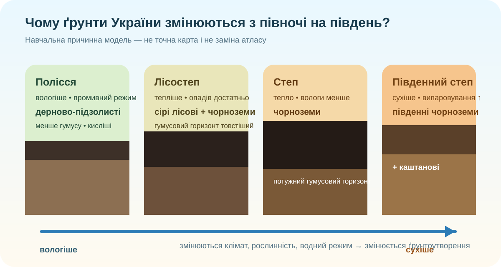

Ґрунтовий детектив
Уявіть три ділянки: північ України з вологішим кліматом і мішаними лісами; центральний лісостеп; посушливіший південь. Чи варто чекати однаковий ґрунт?

Навчальна причинна модель. Просторові межі перевіряємо за реальною картою нижче.
Не схема, а реальні картографічні дані
Спочатку відкрийте інтерактивну карту ґрунтів України. Порівняйте північ, центр і південь; знайдіть, де переважають дерново-підзолисті, сірі лісові, чорноземні та каштанові ґрунти.
Якщо карта не відкрилася всередині сторінки через політику браузера, натисніть кнопку «Інтерактивна карта ґрунтів України» вище.
Зберіть механізм ґрунтоутворення
Ґрунт — не просто подрібнена порода. Його властивості формуються взаємодією клімату, організмів, материнської породи, рельєфу, водного режиму й часу.
Ґрунтовий профіль: що читаємо в розрізі?
Чому дерново-підзолисті ґрунти менш родючі?
За вологого промивного режиму частина сполук вимивається вниз. Під лісовою рослинністю утворюється менше потужного гумусового горизонту, ніж під густою степовою трав’янистою рослинністю.
Чому чорноземи добре сформовані в лісостепу та степу?
Поєднання трав’янистої рослинності, сезонного зволоження, тепла і багатої кореневої маси сприяє накопиченню гумусу. Але конкретний підтип залежить від зволоження, породи й місцевих умов.
Чому на півдні з’являються каштанові ґрунти?
За посушливішого клімату й сильнішого випаровування ґрунтоутворення відбувається інакше: гумусовий горизонт зазвичай менш потужний, зростає роль карбонатів і солей.
Коротка система, яку вже можна запам’ятовувати
| Природна смуга / територія | Поширені ґрунти | Що пояснює поширення |
|---|---|---|
| Полісся | дерново-підзолисті, болотні й лучні | вологіший клімат, промивний режим, лісова рослинність, піщані та супіщані породи |
| Лісостеп | сірі лісові, чорноземи типові й опідзолені | баланс тепла й вологи, чергування лісової та трав’янистої рослинності, лесові породи |
| Степ | чорноземи звичайні та південні | теплий клімат, менше опадів, степова рослинність, значна коренева біомаса |
| Сухий південь | південні чорноземи, каштанові, місцями солонцюваті | дефіцит вологи, сильне випаровування, накопичення солей у певних умовах |
| Карпати й Кримські гори | бурі гірсько-лісові, гірсько-лучні та інші висотно-зональні | висотна поясність, зміна температури, опадів, рослинності та порід із висотою |
Перевірте свою модель
Подивіться фрагмент 08:58–10:31: зональні типи ґрунтів, чорноземи та робота з картою. Не дивіться весь ролик — зараз нам потрібна лише перевірка вже сформованого пояснення.
Міні-фактчек
Спочатку — хто Ви?
Доведіть закономірність
C — Claim: сформулюйте тезу про те, чому ґрунти України мають зональне поширення.
E — Evidence: наведіть 2 конкретні докази з карти/таблиці.
R — Reasoning: поясніть механізм через клімат, рослинність, водний режим і материнську породу.
Домашнє завдання
База: опрацювати §29 електронного підручника та повторити карту ґрунтів.
Дослідницький рівень: обрати одну область України й скласти міні-картку: 2 поширені типи ґрунтів → природні умови → 1 доказ із карти → 1 висновок про господарське використання.
Просунутий рівень: знайти місце, де зональна закономірність «ламається» (заплава, болото, гірська територія, засолена ділянка) й пояснити, який локальний чинник переважає.